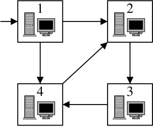

|
|||||||||||||||||
|
Server time: 2006-01-10 05:47:58 |
SPOJ Problem Set59. Bytelandian Information AgencyProblem code: BIA
Bytelandian Information Agency (BIA) uses a net of n computers. The computers are numbered from 1 to n, and the computer number 1 is a server. The computers are connected by one-way information channels. Every channel connects a pair of computers. The whole network is organised in such a way that one can send information from the server to any other computer either directly or indirectly. When BIA acquires new information, the information is put on the server and propagated in the net. The chief of BIA considers what would happen if one computer stopped working (was blown away by terrorists for example). It could happen that some other computers would stop receiving information from the server, because the broken computer was a necessary transmitter. We will call such computers critical. For example in the situation in the picture below the critical computers are 1 and 2. 1 is the server and all information sent from the server to 3 has to go through 2. TaskWrite a program which
InputTen test cases (given one under another, you have to process all!). Each test case consists of several lines. In the first line there are numbers n and m. n denotes the number of computers in the net,(2<=n<=5000). m denotes the number of information channels, n-1<=m<=200000. The following m lines describes a single information channel and consist of two integer numbers a and b separated by a space. It means the computer a sends information to computer b by that channel. You may assume there are no two channels which start and end at the same points a, b. OutputFor every testcase your program should write two lines. In the first line k - the number of critical computers in the net. In the second line k numbers separated by single spaces - the numbers of critical computers in increasing order. ExampleInput: 4 5 1 2 1 4 2 3 3 4 4 2 [and 9 test cases more] Output: 2 1 2 [and 9 test cases more]Warning: large Input/Output data, be careful with certain languages
|
||||||||||||||||
| |||||||||||||||||